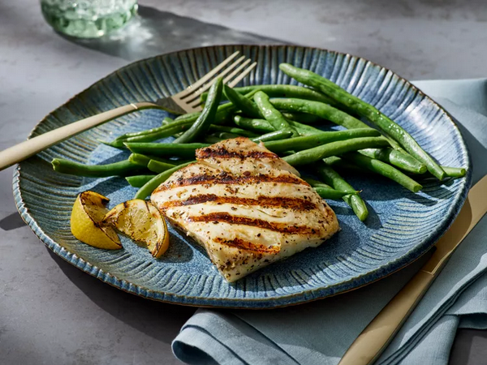

Grilled Fish | Odin Recipes
See other recipes
Grilled Fish

This grilled fish recipe is very simple. My husband is not much of a fish lover but when I made this recipe with halibut he very much enjoyed it.
Ingredients
- Olive oil
- Fresh lemon juice
- Chopped fresh parsley
- Clove garlic, minced
- Dried basil
- Salt
- Ground black pepper
- Halibut fillets
Steps
- Gather all ingredients.
- Combine olive oil, lemon juice, parsley, garlic, basil, salt, and pepper together in a stainless steel or glass bowl.
- Place the halibut fillets in a shallow glass dish or a resealable plastic bag; pour the marinade over the fish. Cover or seal and place in the refrigerator for 1 hour, turning occasionally.
- Preheat an outdoor grill for high heat and lightly oil the grate. Set grate 4 inches from the heat.
- Remove halibut fillets from marinade and drain off any excess. Cook on the preheated grill until fish flakes easily with a fork, about 5 minutes per side.